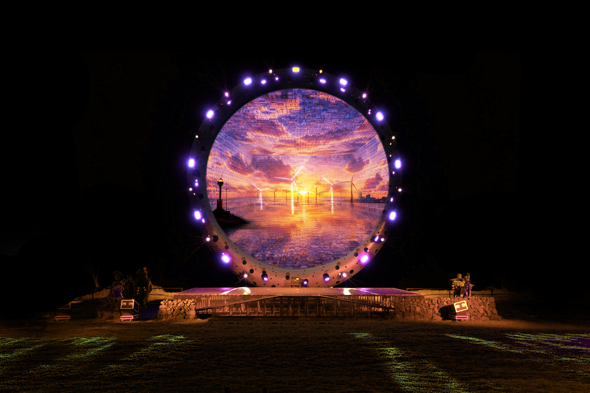
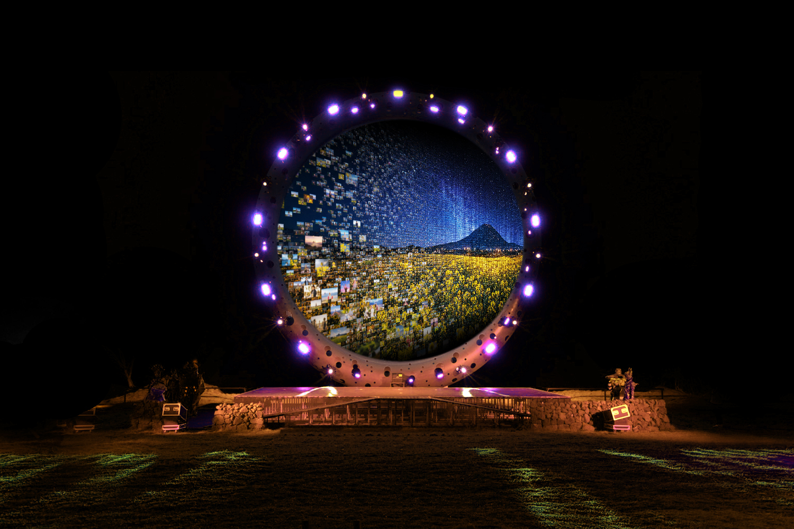
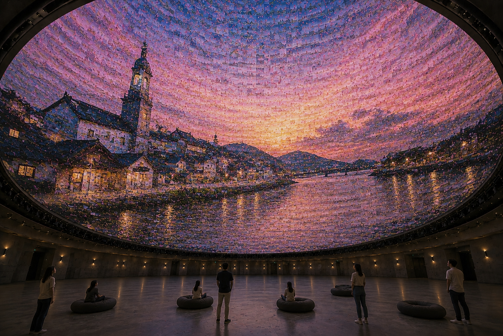
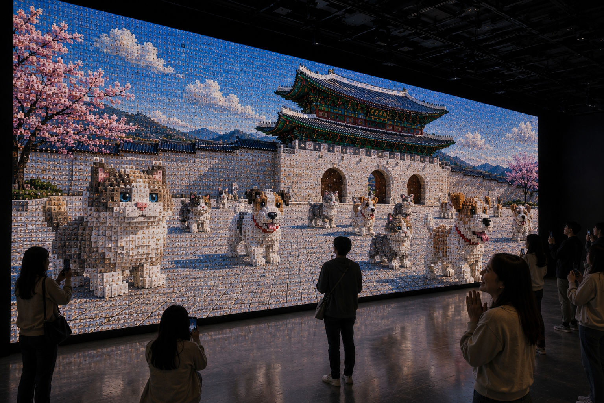
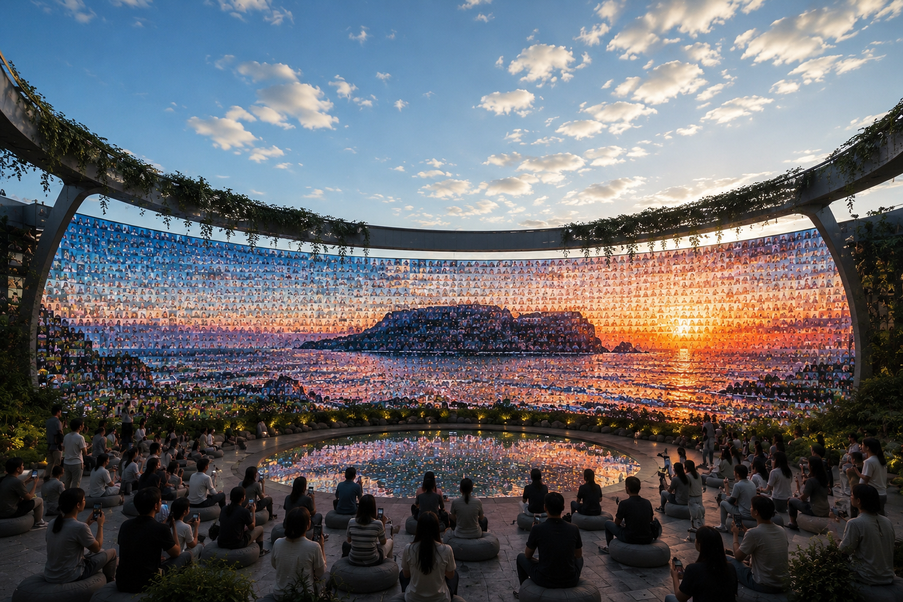
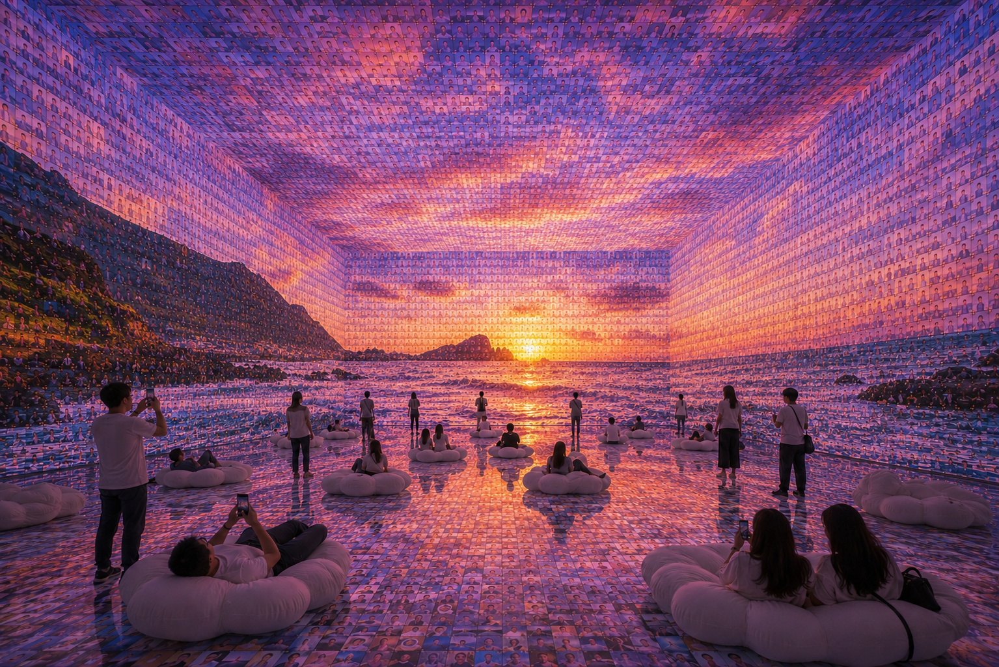
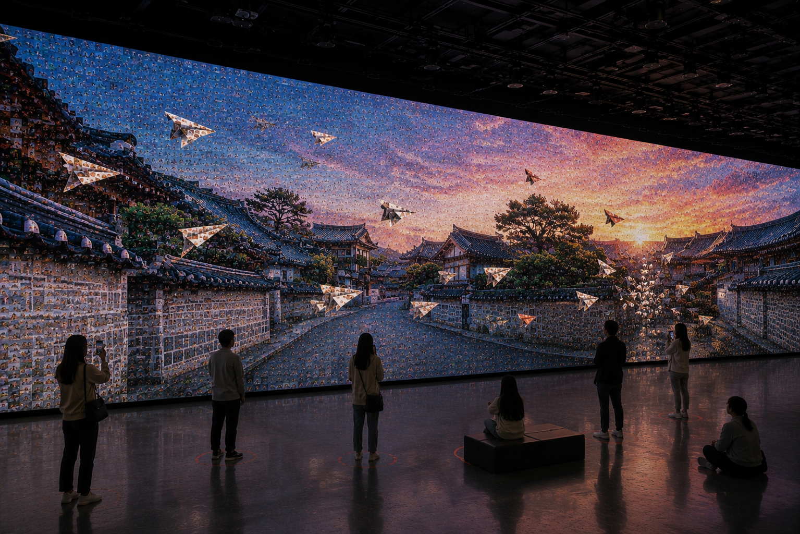
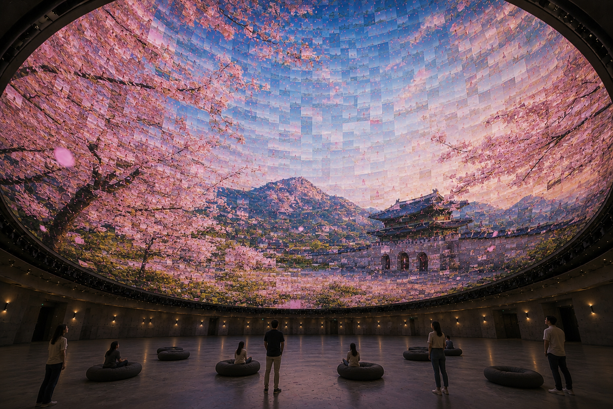

ABOUT / SHARED TERRAIN
Fragments become a landscape.
SCAPESYNC treats each image, sensor point, and visit as a tile in a larger field. The site reveals how separate inputs synchronize into one collective spatial memory.

ABOUT / SHARED TERRAIN
SCAPESYNC treats each image, sensor point, and visit as a tile in a larger field. The site reveals how separate inputs synchronize into one collective spatial memory.
DESIGN / MODULAR IMAGE FIELD
The visual language is built from fixed tiles, disciplined spacing, and layered depth. Hover states expose the construction logic while keeping the mosaic intact.
DESIGN_DATA_01
Photographic fragments resolve into a single spatial image while preserving the feeling of many local memories.

DESIGN_DATA_02
The system keeps the image readable at distance, then reveals its tile logic as the viewer moves closer.

DESIGN_DATA_03
Each scene can act as both an image surface and a data surface for synchronized public display.

DESIGN_DATA_04
Layered tiles make the final composition feel assembled, not simply displayed.

DESIGN_DATA_05
The grid becomes a flexible frame for places, people, and environmental traces.

DESIGN_DATA_06
Large-scale imagery stays coherent while tile-level variation keeps the surface active.

DESIGN_DATA_07
Repeated fragments create rhythm across the display without losing the identity of the source scene.

DESIGN_DATA_08
The design language supports changing content while keeping one recognizable SCAPESYNC structure.

TECHNOLOGY / LIVE SYNCHRONIZATION
Interaction, image input, and telemetry updates are represented as stable units. The tiles can breathe on the Z axis without scattering from the larger landscape.